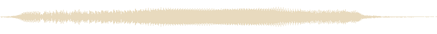
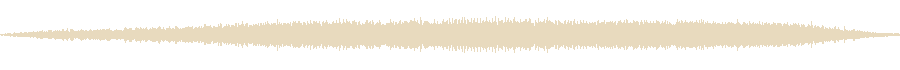

Aujourd'hui : les chats ne font aucun bruit. Chaque emote reçoit sa voix, entendue par toute la table.
Sans question : sons de Freesound, licences CC0 ou CC BY seulement (auteurs CC BY crédités). Chacun est coupé, nettoyé et mis au même volume que la bougie et l'horloge du vote. Dans le jeu, chaque lecture varie un peu de hauteur pour que deux miaous ne soient jamais identiques.
Le chat fait coucou : un miaou au moment où il lève la patte.
Le chat pleure (aussi enchaîné) : un sanglot au début, puis d'autres tant qu'il pleure.
Plaintif et aigu, le plus « triste ».
kitten20.wav, Department64, CC0
Fait par une voix humaine, très expressif.

Sad Cat Meow (Human Made Sound), qubodup, CC0
Le B2 descendu de trois demi-tons : plus lourd, plus lent.
catmeow1, Yoyodaman234, CC0
Le chat accuse, au moment où il pointe la patte. Après un vote public, tous ceux qui ont voté le font en même temps.
Le chat souffle, menaçant, sans miauler.

catHisses1.wav, Zabuhailo, CC0
Le C2 qui finit en souffle.
Angry Cat Meow, bevibeldesign, CC0 ; catHisses1.wav, Zabuhailo, CC0
Le chat enchaîné se débat tout seul de temps en temps : un cri d'effort court.
Un cri tendu, comme tiré par les chaînes.
Cat, Screaming, A.wav, InspectorJ, CC BY 4.0
Tant que le joueur garde l'emote, le chat pleure : à quel rythme reviennent les sanglots ? (le B choisi, sinon B1, sur 12 secondes)
Joue les sons que tu as aimés (sinon ceux par défaut) l'un après l'autre, sur la musique du jeu.